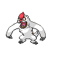

 英語版の図鑑説明
英語版の図鑑説明
Vigoroth is simply incapable of remaining still. Even when it tries to sleep, the blood in its veins grows agitated, compelling this Pokémon to run wild throughout the jungle before it can settle down.
日本語訳
じっとしていることができません。眠ろうとするときでさえ血が騒ぎ、落ち着く前にジャングル中を暴れまわります。
 この図鑑文に出てくる英単語
この図鑑文に出てくる英単語
| 英単語 | 意味 | 品詞 | レベル |
|---|---|---|---|
| simply | ただ単に | 副詞 | 高校 |
| incapable | できない | 形容詞 | 大学 |
| remaining | 残っている | 形容詞 | 高校 |
| veins | 血管(複数形) | 名詞 | 大学 |
| agitated | いらいらした、興奮した | 形容詞 | 大学 |
| compelling | 強い力を持つ | 形容詞 | 大学 |
| throughout | 〜の間ずっと、〜中で | 前置詞 | 高校 |
| settle | 落ち着く、住みつく | 動詞 | 高校 |
文法ポイント even when 〜 は「たとえ〜でも」「〜なのに」という意味で、ふつうなら予想される結果とちがうことを表します。
tries to sleep は「動詞 + to + 動詞の原形」の形で、to 以下が「〜すること」を表します。
 英語名「Vigoroth」の由来
英語名「Vigoroth」の由来
英語名「Vigoroth」は、vigor（活力）、vigorous（元気な）とsloth（ナマケモノ）を組み合わせた名前と考えられている。ドイツ語の名前は「Muntier」で、munter（元気な）、Faultier（ナマケモノ）から作られている。
出典 Bulbapedia
 ヤルキモノの種族値
ヤルキモノの種族値
HP80
こうげき80
ぼうぎょ80
とくこう55
とくぼう55
すばやさ90
合計 440
 ヤルキモノの英語名をシェア
ヤルキモノの英語名をシェア
「Vigoroth」の由来、友だちは知ってるかな？
 よくある質問
よくある質問
- ヤルキモノの英語名は？
- ヤルキモノの英語名は「Vigoroth」です。
- ヤルキモノの英語名「Vigoroth」の由来は？
- 英語名「Vigoroth」は、vigor（活力）、vigorous（元気な）とsloth（ナマケモノ）を組み合わせた名前と考えられている。ドイツ語の名前は「Muntier」で、munter（元気な）、Faultier（ナマケモノ）から作られている。
- ヤルキモノは英語版の図鑑でどう説明されている？
- 「Vigoroth is simply incapable of remaining still. Even when it tries to sleep, the blood in its veins grows agitated, compelling this Pokémon to run wild throughout the jungle before it can settle down.」と書かれています。日本語にすると「じっとしていることができません。眠ろうとするときでさえ血が騒ぎ、落ち着く前にジャングル中を暴れまわります。」という意味です。
ヤルキモノは第3世代（ホウエン地方）のポケモンです。第3世代（ホウエン地方）の英語名一覧 →